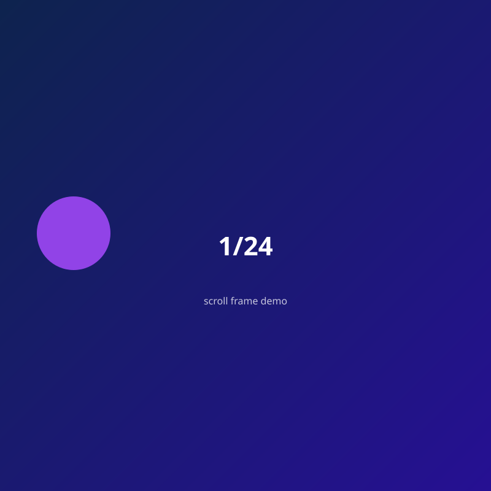

linkup_mcp demo
Scroll to scrub through frames — the same technique as Whisk → Flow → ezgif → zip → code, without shipping hundreds of PNGs in git.

1 / 24
scrollY → frame index (this page).Swap frames/ for your own frame_000.png … frame_NNN.png from a zip.